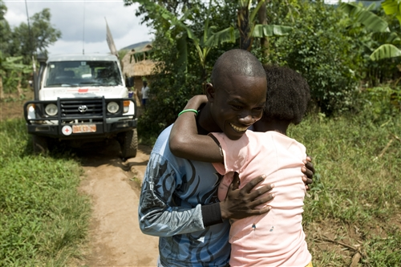
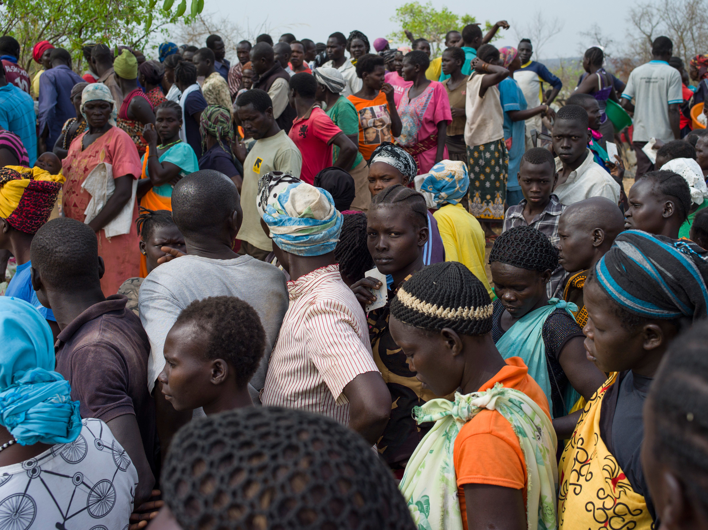
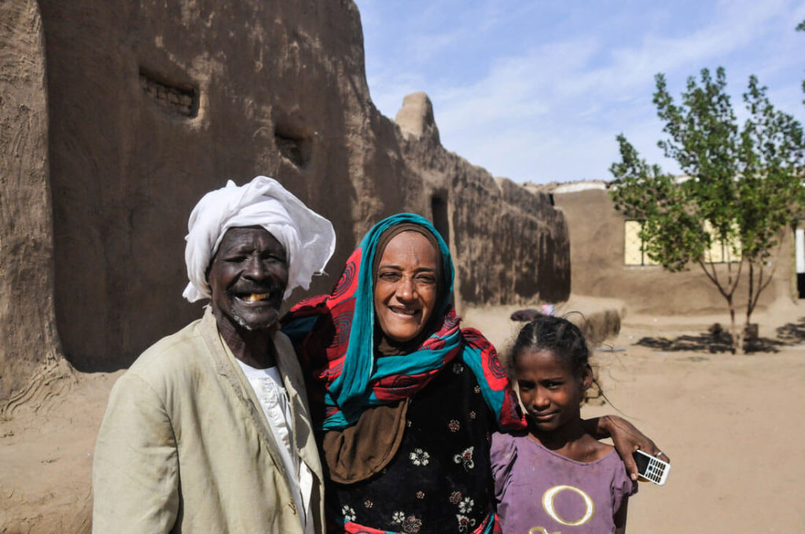
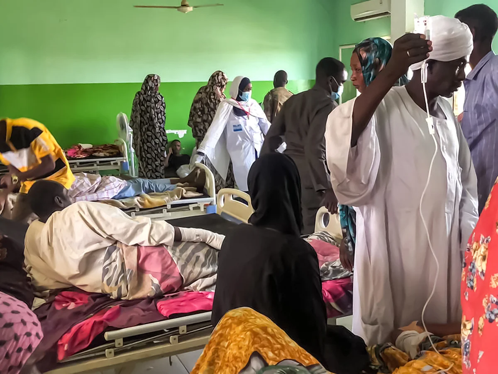
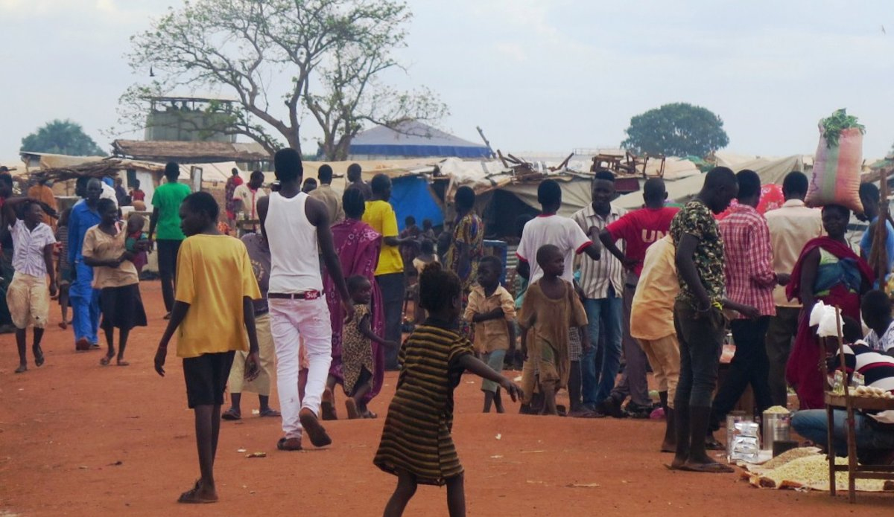
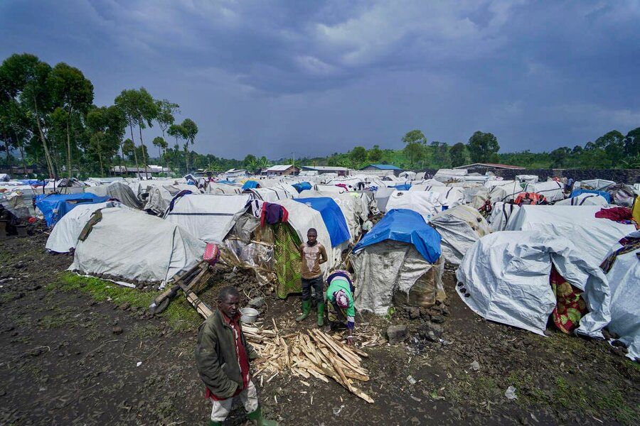
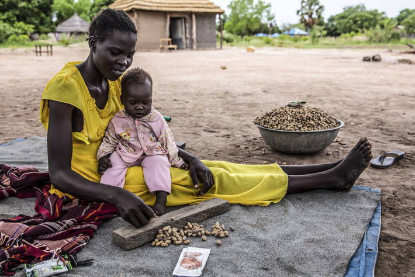
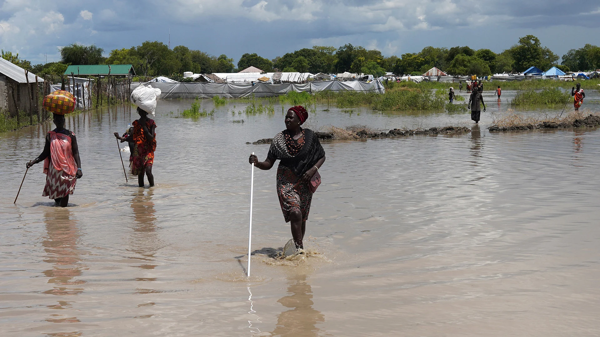
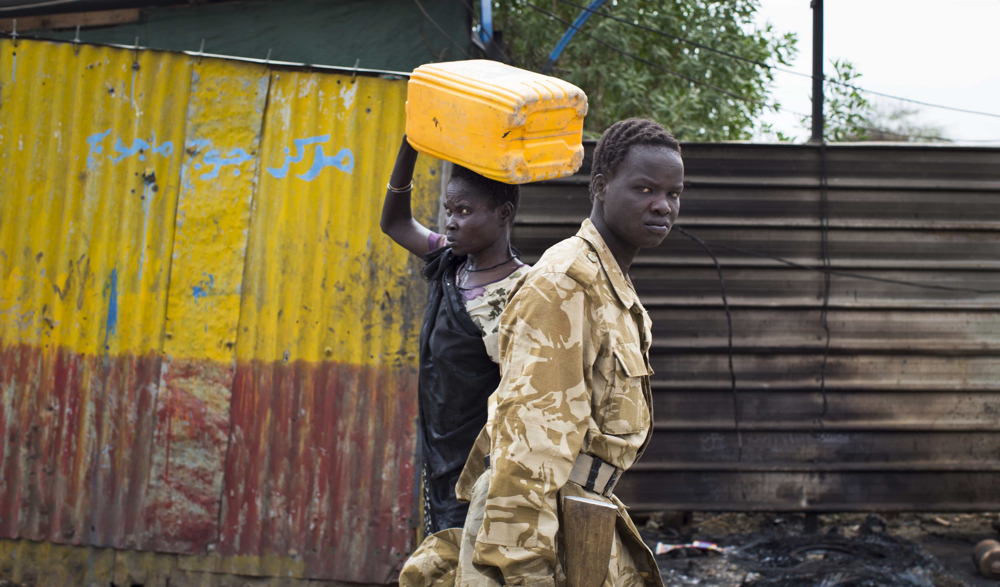
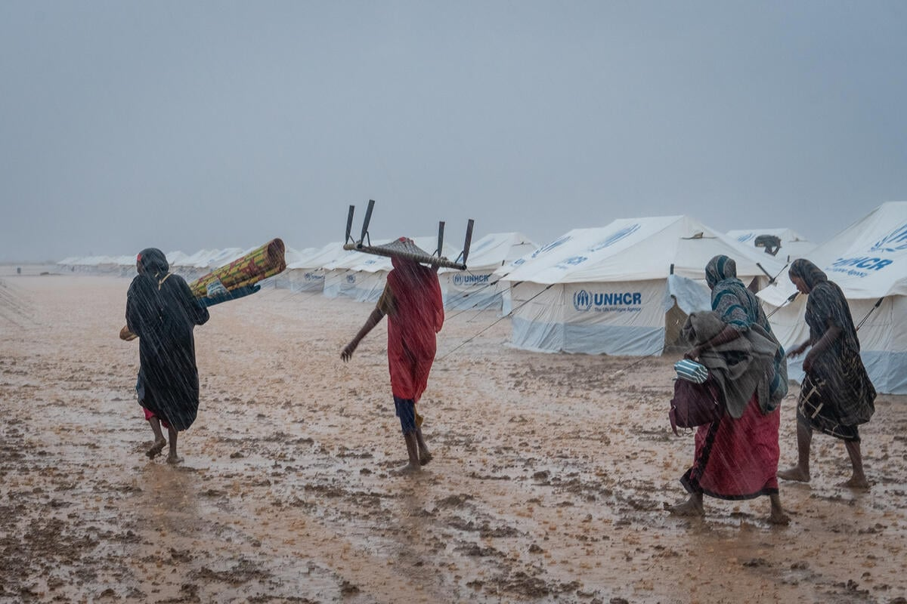

Ever since gaining independence from Sudan, South Sudan has experienced significant population movement driven by a variety of factors, including healthcare challenges, educational pursuits, security concerns, economic opportunities, conflict-related displacement, and natural disasters.
Despite these ongoing challenges, South Sudan’s resilience and cultural richness serve as a foundation for potential growth. Analyzing migration patterns and demographic trends is essential for identifying development priorities and fostering long-term stability within the country.

To better interpret the data, we filtered and aggregated the population flows into three major neighboring countries: Ethiopia, Sudan, and Uganda, which account for the majority of cross-border migration.
The visual analysis below provides insights into migration flows as monitored across various flow monitoring stations within South Sudan. It highlights:
Persons or groups who have been forced or obliged to flee or leave their homes or places of habitual residence, in particular as a result of or in order to avoid the effects of armed conflict, situations of generalized violence, violation of human rights, natural or human-made disasters, and those who have not crossed an internally recognized state border.
Return migration refers to the individual or family decision of a migrant to leave a host country and to return permanently to the country of origin. Research topics include the return migration process, motivations for returning, the experiences returnees encounter, and the impacts of return migration on both the host and the home countries.
Poor healthcare infrastructure in rural areas or conflict-affected zones drives migration to urban centers or neighboring countries where better medical facilities and resources are available.
To further explore migration trends, we zoomed in on a monthly temporal scale and conducted a demographic breakdown. This analysis focuses on key aspects, including:
● Gender Ratio: The participation of males versus females in migration.
● Registered Refugee Status: Whether individuals are registered refugees and their reasons for migration.
● Intentions and Duration: Whether individuals intend to stay long-term and their corresponding reasons.
Many migrants move to access better educational opportunities, especially as access to quality education is limited in rural areas. Schools and universities in urban centers attract families seeking improved prospects for their children or themselves.

Economic migration occurs when individuals or families relocate in search of better employment opportunities or income sources. South Sudan's challenging economic environment, including high unemployment rates and poverty, pushes people to migrate to urban areas or neighboring countries.
Poor healthcare infrastructure in rural areas or conflict-affected zones drives migration to urban centers or neighboring countries where better medical facilities and resources are available.
Migration can also be driven by family reunification, marriage, or other family-related obligations. Individuals often travel to join relatives in safer or more prosperous areas.
Migrants who initially left their homes for reasons such as education, employment, or temporary relocation may choose to return voluntarily after achieving their goals or when conditions improve in their origin area.
Ongoing conflicts in South Sudan force people to flee their homes to escape violence, insecurity, and persecution. Many end up as internally displaced persons (IDPs) or refugees in neighboring countries.
Severe food shortages, often due to drought, conflict, or economic instability, drive migration as families move in search of food assistance or better agricultural opportunities.
Natural disasters such as floods, droughts, or locust infestations displace many people in South Sudan. Seasonal rains often lead to floods, forcing communities to migrate to safer areas.
This includes various less common reasons for migration, such as cultural obligations, legal or administrative issues, and personal safety concerns unrelated to conflict or disaster.
Seasonal migration often relates to agricultural activities or pastoralist practices. People move temporarily to access fertile lands, grazing areas for livestock, or seasonal job opportunities during planting or harvest seasons.
1. Short-Term Migration Dominates:
○ The majority of individuals crossing borders do not intend to settle long-term.
○ Key drivers include improving living conditions through trade, educational opportunities, healthcare access, and family visits.
2. Gender Disparity in Migration:
○ Gender Ratio: The participation of males versus females in migration.
3. Registered Refugee Dynamics:
○ Migration flows labeled as “registered refugees” closely correlate with seasonal, economic, and family-related factors.
From this analysis, it is evident that addressing the root causes of migration is critical to fostering internal stability in South Sudan. Specifically, the following priorities should be considered:
● Infrastructure Development: Improve basic infrastructure to meet daily needs, including healthcare, education, and trade facilities.
● Flood Prevention: Mitigate seasonal flooding to reduce displacement.
● Economic Opportunities: Promote sustainable economic activities to reduce dependency on cross-border travel.
By focusing on these areas, South Sudan can lay the groundwork for a more stable and prosperous future while addressing the patterns and drivers of migration.